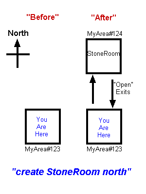
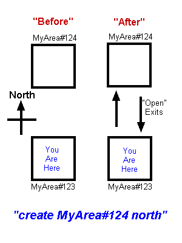
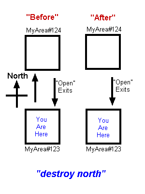
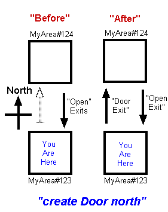
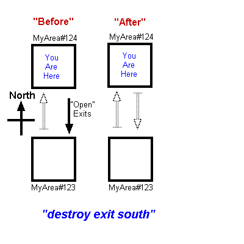

The Novice Archon's Guide
to World Construction and Destruction
v1.2
By Archon Grothus Gallslanger of the Free City of Maltan
Causing buildings and towers to appear along paved streets, mountains to rise from the dust, and then breathing life into this worlds denizens may seem like a daunting task, but you will quickly discover that it is not so. All it takes is some careful planning, and educated execution.
Planning is the First Step
Before a single bird can flitter through the skies that you opened up, you must have planned the placement of that sky, and the song of that bird. I am assuming you have been given some general area to construct, some wicked kingdom, joyous elven city by the sea, or some other such nonsense. If not, get one; decide on the general theme of some area you wish to construct.
At this point I suggest you get a piece of graph paper or
parchment. Upon it you shall draw small squares next to each
other. Plot out every location you will create. The squares need not
be equal in size, but they need to all fit together somehow. Before
invoking the spells of creation, you should know where every door leads, where
every path ends, and if X indeed marks the spot, where the X is.
Inside
each square, you shall make small notes. What notes? Well, that's
the next part of our story.
Understanding Rooms
At the foundation of the CoffeeMud world is the room. Now, a room is not just some pink wallpapered play area, but simply a place. Certainly a kitchen can be a room, as can a pink wallpapered play area, but so can the bottom of a well, a stretch of rolling hills, the top of a tall mountain, or a dragon’s lair deep underground. Physical size does not matter with rooms; only your imagination can determine that.
Every room has a general foundational type that defines it. That type determines the behavior of that room day to day, whether it is outside or inside, made of wood or stone, a mountain or a plain, in darkness or light, a cliffside or deep in the ocean. This foundational type of every room has a name: Locale.
If you log into CoffeeMud right now, you can list the available Locales with the command "list locales". This list should include many different types of locales, most of which are self-explanatory. They include:
CaveMaze -- a dark, dank, multi-room maze of
caves
CaveRoom -- dark and dank
CaveSurface -- dark and dank
ClimbableSurface
CityStreet --
outside urban area
ClimbableSurface -- an area that can only be climbed or flown
through
DarkCityStreet -- a dark, outside urban
area
DarkIceRoom -- a cold, dark, indoor place
DarkStoneGrid -- a large,
dark, indoor, multi-room locale
DarkStoneMaze -- a large, dark, indoor,
multi-room maze
DarkStoneRoom -- dark StoneRoom
DarkUnderWater -- a dark place beneath the
water
DarkWoodRoom -- dark WoodRoom
DarkWoods -- a dark wooden area
outside
DarkWoodsMaze -- a dark, wooded, ouside, multi-room maze
Desert --
a hot, dry, outside locale
EndlessSky -- an endless, multi-room, locale
up in the sky
FrozenMountains -- a cold, outside, mountanous
room
FrozenPlains -- the cold snowy plans
Grid -- the basis for all of the
Grid areas -- do not use.
HotRoom -- a hot, stone, indoor place
IceRoom --
a cold, icey, indoor place
InTheAir -- a place up among the
clouds
MagicFreeRoom -- an indoor, stone place where magic always
fails
MagicShelter -- the basis for the mage "Shelter" spell -- do not
use.
Maze -- the basis for the maze locales -- do not use
Mountains -- an
outside, mountanous region
MountainsMaze -- an outside, mountanous maze of
rock
MountainSurface -- a climable mountainous place
Plains -- out in the
open fields
PlainsGrid -- a huge multi-room, outdoor plains
area
ShallowWater -- a wet, outdoor area
StdRoom -- the basis for all
other Locales, do not use!
StoneMaze -- well lit indoor multi-room maze with stone walls and
ceiling
StoneGrid --
well lit indoor multi-room locale with stone walls and
ceiling
StoneRoom -- well lit indoor room with stone walls and
ceiling
TreeSurface -- a wooden ClimbableSurface, such as the trunk of a
tree
UnderWater -- as wet as it gets...
unless you are a fish you won't live long
UnderWaterGrid -- a huge multi-room
underwater locale
UnderWaterMaze -- a huge multi-room maze of underwater
locales -- be careful!
WetCaveMaze -- as CaveMaze, but extremely wet and
nasty
WetCaveRoom -- a wet and nasty CaveRoom
WoodRoom -- well lit indoor room
with wooden walls and ceiling
Woods -- thick with trees and life, the bright
forest
WoodsGrid -- thick with trees and life, multi-room
expanse
WoodsMaze -- thick with trees and life, a multi-room maze of
woodlands
For each room you are drawing on your graph
parchment, you should note in the Locale type of the room from the above list, or from the list you received when you entered "list locales"
into CoffeeMud.
The detailed properties of rooms are discussed further in the section on creating rooms.
Understanding Exits
Now surely you did not expect everyone to conjure him or herself from place to place! Why, the pitiful halfling thieves would starve in their holes if this were so. No, each of the rooms you have drawn on your paper will be connected with things called Exits.
For any two rooms that one can travel between, there are always two exits. One exit leads from the first room to the second. Another exit leads from the second room to the first. Usually those exits are the same, but they need not be if you don't want them to be so.
All exits will take a person from one room to another, and may even take them back again if you choose. An exit can only be located in one of six directions: North, South, East, West, Up, and Down. The four compass directions are easy to fathom, but be careful with up and down, as they need not be unhindered flight, or a reckless fall. If, for instance, the destination room is a Locale like "InTheAir", then Up obviously represents the open sky. If it is another "StoneRoom", however, it probably represents a flight of stairs. The Down direction may represent falling off a cliff, but it may also represent a ladder down to the basement. Either way is fine.
Exits, like rooms, can be of many different types. If you are still in CoffeeMud, enter the command "list exits". The list you receive describes the many connectors that can be mixed and matched between rooms. Some include doors, and some include doors with locks. There are walkways with pits, doors with needle traps, and many others. By far the most common of these Exits is called "Open". It describes a completely free and clear path between the two rooms you are creating.
As you finish your graph parchment drawing, be sure to note those places where there are doors, locked doors, pit traps, and open walkways. If a door is one way, or if a door leads to one place when one enters, but does not go back to there when one leaves, make a note of that too.
However, it may come to pass that there is a rickety straw door to some hut you wish to have, but it was not listed among your choices. Fear not, for there is "GenExit". "GenExit" stands for "Generic Exit", and represents the finest in Archon power. A completely customizable exit flowing from one room to another. GenExits, as well as the other features of exits, are discussed further in the section on creating exits.
Understanding That Which Creepeth Upon the Land
The denizens of your land are surely the greatest accomplishment you will claim. From the lowly cooks in your kitchens to the great beasts in the darkest dungeons, it is they who will be remembered by those who visit your realm.
Funny then that for things so important, they should have such a short, ugly sounding name: MOB. If you are in CoffeeMud, you can list them: "list mobs". It will show you every creature that can populate your cities, dwell in your dungeons, or hide in your pantries.
If a creature is not listed there that you require, there is always the GenMob, that nasty formless being that can be shaped by the Archon to appear and behave exactly as it should. A GenShopkeeper is also available to provide valuable services for your community. For more devious spirits, however, the GenUndead is also available, to strike fear in the hearts of the purest cleric.
GenMobs, as well as the features of MOBs, are discussed further in the section on creating MOBs.
The Things We Treasure
Our last planning topic is that of the items that will be found in your land. Some of them will be priceless once-in-a-lifetime creations. Others will be reoccurring trapped chests that always seem to have enough gold for those bold enough to continuously risk their guardians.
The items can be discovered using the "list items" command. Other items include weapons, which can be discovered through "list weapons", armor from "list armor", and other miscellaneous enchanted items through "list magic".
For those items you need by are not present, there is also the "GenItem", "GenBoat", "GenCoins", "GenCorpse", "GenKey", "GenLantern", "GenLightSource", "GenMap", "GenContainer", "GenFood", "GenWater", and "GenReadable". For the fighting spirit there is the "GenWeapon", "GenStaff", and "GenArmor". Among the formless magical items are "GenPill", "GenPotion", "GenScroll", "GenWand", and "GenSuperPill". These and the many properties of items are discussed below under the section on creating items.
The Art of Creation
Before beginning, you should log into CoffeeMud and take yourself to some place that is adjacent to the area you will be forming. You should also cast the spell of natural enlightenment using the following command: "sysmsgs". You should see an utterance that reads "Extended messages are now: ON".
Now your eyes will behold new wonders when you look around the rooms: You will see the Locale types of the room, the Room IDs that have been assigned uniquely to each room, the Area IDs of the area you are in. They should look like this:
Area :(MyArea)
Locale: (StoneRoom)
(MyArea#123) Joe Bob's Room
The first line lists the area name, the second line the locale type we talked about earlier, and the third line lists the Room ID, followed by the Room Name. Take note of them all, my friend, and learn to appreciate their beauty.
Creating Rooms
Now that you have your plan laid out, it is quite time to being execution. Gather your strength, and begin harnessing the power of the Archon, for you will need every ounce of it when the wood and rock chips start flying.
To create a new room most easily, you must first be standing in a room adjacent to it, one that will be connected to it through some exit. You will then utter the invocation of room creation, summoning the Locale in the direction that the new room should be. For instance, you wish to have a new room north of room "MyArea#123". If room "MyArea#123” is already created, and the new room is going to be of the "StoneRoom" Locale, you would bring yourself to room "MyArea#123" and utter the words: "create stoneroom north".

At this point, you should cover your ears, as the sound of a stone room falling to the north is often quite disturbing. Between the two rooms; the one you are standing in, and the one you have created, will be a default exit: the Open exit. Most times, that is ok, though changing it will be the subject of the next section.
However, once this is done, and the rooms are irrevocably linked, you can still throw a small twist on things. If you are still standing in room "MyArea#123" and wish to create a NEW StoneRoom in the SAME direction, it can be done. Uttering the words "create StoneRoom north" AGAIN and a new room is created. Now, what happened with "MyArea#124" you’re wondering? It is still there, and it still leads back to where you are standing -- a one way exit.
Modifying Rooms
For now, once you have created the new room, it is time to design the landscape of it. To do this, you should enter the room through the default Open exit that was created for you. You will find the room plain and boring.
To give the room a new name and description, utter the invocation: "modify room" and follow the promptings. You will also be asked to add any "behaviors" and "affects" to the room that you wish to. These may seem strange at first, and usually you won't add any of these at all. After all, rarely does a plot of dirt exibit any behavior, and what the heck is an affect? Well! To the first, the wind blowing through the trees, the hoot of an owl, or a distant cackling noise are all considerable behaviors. In fact, it is a behavior called "Emoter". Enter "help behaviors" for more information about the Emoter behavior. As for affects, well, affects are special properties which you can attach to your new little hole in the ground. There are lots of nice properties that one may add to a Room, such as "Prop_ReqNoMOB" to make your room a player-only place to be. There is also "Prop_MagicFreedom" to fluster any spell-using folks that happen along, or "Prop_NoChannel" for a place of quiet... you'll need "Prop_PeaceMaker" to go with it if you want peace AND quiet. To learn more about the properties you can add to rooms, enter "help properties" while you are in CoffeeMud. Now, isn't this fun? Remember, if you make a mistake, fear not, for the land does not grow weary of your molding.
* IMPORTANT * If this room is the first room in the new area you are embarking upon, you should change its Area ID to that of the new one. Create NO FURTHER ROOMS until this is done, and ensure that all future rooms in the area are created out of this new one. To change the Area that a room belongs to, enter the command: "modify room area newareaname". Where I have entered "newareaname", you should enter the name of the area you are creating. Now, any future rooms that you build by standing in this room will bear its area mark, as well as any rooms created from any room bearing your new area mark.
Linking Two Rooms Together
If you have created an area, and wish to link one of the rooms in your area with one of another, you can use a command that utilizes the Room IDs mentioned above. If you would like to create a northerly link from room "MyArea#123" to a room whose room ID is "MyArea#124", then you need only stand in room "MyArea#123", and utter the invocation: "link MyArea#124 north". This will create an Open exit between the room you are standing in, and the room whose ID is born out.

You should note that this command could be used as it was in the last section to create one-way exits to existing rooms.
Unlinking Two Rooms
If you wish to detach two rooms from each other, you need only learn the wicked "destroy command". If you are standing in the room to the south of the one you wish to unlink, and the room you wish to detach from is to the north, utter the command: "unlink north". It will do the trick!

Keep in mind that just because there is no longer a route from the room you are in to the other via a northerly path, it does not mean that there is no path from the detached room back to here again. You may have to conjure yourself into the other place and enter a "destroy south" command to completely detach them forever.
Destroying a Room
Sometimes the pain born from a failed or evil place is too much to bear, and as an Archon, you can do something about it. This involves the destroy command. It does not merely unlink the room, but obliterates it altogether and forever. To do this, first make sure you are not standing in the room you wish to destroy. Such destructive magic would surely be your end as well. Then you must utilize the Room ID of the doomed place. If the room you wish to destroy has the Room ID of "MyArea#124", then enter: "destroy MyArea#124". It will obliterate that place from the planet forever.

Creating Exits
The difference between Exits and Rooms is a very important one. Creating and destroying Rooms describes WHETHER two rooms are connected, and by which direction. Creating and destroying Exits describes HOW one gets from one room to the next. Two rooms must be connected together before exits between them can be modified.
For instance, suppose you linked "MyArea#123" and "MyArea#124" as described above. By default, you get an StdOpenDoorway, also known as an "Open" exit. These exits can be walked through freely. Now suppose you wish to have a Door between the two rooms. If the exits between the two rooms are both the same, and you are standing in the southernmost room of the two, then changing them both is simply a matter of issuing the command "create Door north".

Destroying Exits
Just as unlinking rooms disconnects them, destroying exits can SEEM to disconnect them. When you issue a simple destroy command, and refer specifically to the exit, then you will not be destroying the link between the two rooms, but merely the exit that travels between them. Archons can still travel through these missing links, but players will not be able to. Also, destroying an exit only deletes the exit in one direction, not both. For instance, if you are standing in the southerly room of two linked rooms that both have Exits between them, and you issue the command "destroy exit north", you will destroy the Open exit between the rooms. As an Archon, you can still travel north through the destroyed exit, but players will not be able to.

Now, that an exit has been deleted, it is possible to create a DIFFERENT kind of exit for the northerly direction from MyArea#123 to MyArea#124. Issuing a create command like "create Door north" will create a door that leads from MyArea#123 to MyArea#124, WITHOUT AFFECTING the Open path from MyArea#124 to MyArea#123. This is only possible when the exits between two rooms are different, or one is deleted, as is our case here.

Now, suppose you wanted to have the same Door going between two rooms. For sure this is a more common scenario than the example we just went through. To do this, you must first delete BOTH of the exits between two rooms as described above. That means entering MyArea#123 and entering "destroy exit north", and then entering MyArea#124 and entering "destroy exit south".

Now, with both exits deleted (and thus the same), you can create a single door between them as we did in the first part of this section using the "create Door south" command.

The "GenExit"
As mentioned briefly earlier, the GenExit is an undefined exit that one can mold to fit ones needs. Whenever a GenExit is created or modified, you will be presented with a series of properties to change. Hitting return will leave most of these properties without modification. Entering new values will replace the old values. These properties include:
| Property | Description |
| Name | the general name of this exit. Such as "the grand portal", or "the wooden gate". |
| Description | what one sees when this exit is LOOKed at with the LOOK command |
| Display Text | what one sees when the EXITS command is issued and the way is OPEN. |
| Level | The Level of the door can determine how difficult it is to PICK or KNOCK. |
| Has A Door | I think thou canst figure these next few out. |
| Door Defaults Closed | |
| Has A Lock | |
| Door Defaults Locked | |
| Reset Delay # | Whenever this exit is opened after previously being closed, this is the number of ticks (where a tick is currently 4 seconds) that will transpire before the exit is reset to its default state. |
| Trapped | The trap on an exit may range from a pit, to a needle in the lock, to a blade that swings down whenever one opens the door. |
| Closed Text | what one sees when the EXITS command is issued and the way is CLOSED. |
| Assigned Key Item | This is the secret code that must be present in the StdKey for you to be able to unlock it. The StdKey must have it's Miscellaneous Text property set the same as this value in order to open this exit using the UNLOCK command. If the level is sufficiently low, the door can still be KNOCKed or PICKed without the key. |
| Door Name | Is it a gate, door, grate, or portcullis. Specify that here. |
| Close Word | When you close it, are you really lowering it, or sliding it? Specify the correct verb here. |
| Open Word | When you open it, are you really raising it, or sliding it? Specify the correct verb here. |
| Level Restriction | Exits without doors may be restricted by level, alignment, or by class. If by level, then the level specified above would be the minimum level required to pass through the exit. |
| Class Restriction | a character class may also restrict Exits without doors. If so, you will be asked to enter the name of the class that may pass through the entryway. |
| Alignment Restriction | Oh yea, even the wicked may be kept back by restricting passage to those of the correct state of mine. |
| Is.. flags | I think thou doest grok most of these flags. You may also require a little climbing or flying for this exit, in case it is a mere gulf the player must traverse, instead of the wide expanse that a climable room entails. |
To modify an exit that is east of your present location, simply enter "modify east". If the exit to the east of you is a GenExit, you will receive the properties mentioned above. If the exit is anything other, than you will be prompted to enter the Miscellaneous Text field. For a standard exit, like Open or Door, this field represents the secret code that must also be specified in the StdKey item in order for you to unlock this door without spells or thief picking. For a readable exit, this field represents the text that is written on the door.
Creating Items
For our purposes, an item is any normal item, piece of armor, a weapon, a container, or any magical item, armor, or weapon. To bring one of these things into the world, you have only to call its true name using the create command. To create a Longsword, for instance, issue the command "create Longsword". It will then fall from the sky onto the floor or ground before you.
The "GenItem", "GenLightSource", "GenLantern", and "GenReadable"
Whenever a GenItem is created, much like the GenExit above, you are presented with a list of properties to fill in. Pressing enter will leave the property unchanged. The properties include:
| Property | Description |
| Name | the name of the item, like "a stone", or "a pencil" |
| Description | what one sees when one looks at the item. |
| Display Text | what one sees when an item is laying in a room. if you enter 'null' here, the item becomes blended, meaning that it does not show up in the listing of room contents, but may still be "looked" at, "read", or (if allowed) picked up! |
| Secret Identity | what one sees when the Identify spell is cast on the item. |
| Level | the level of the item, dictating the lowest level a character must attain to possess or hold it. |
| Uses Remaining | This property applies especially to GenWand, GenStaff, and GenScroll, discussed below. This tells how many times the magic in the item may be reused before requiring a recharge. |
| Rejuv | If this item rejuvinates after being removed from its default location, this is the number of ticks between the removal time, and the time the item rejuvinates. For more information on making the RejuvTicks property take effect after changing it, see below under Rejuvenating Items and Mobs" or "How to Save a Room". |
| Is This Item Droppable | whether the item can be dropped into a room. |
| Is This Item Removable | whether the item, once held or worn, can be removed. |
| Is This Item Readable | whether there are any readable markings on the item |
| Readable Text | if this item is marked, what those markings say. |
| Material | this is the material that the item is made of. This affects the classes with armor restrictions, and the effects of certain spells. Choices include: cloth, metal, wood, leather, glass, and mithril. |
| Is This Item Trapped | whether the item is trapped. For a simple item, a trap will be triggered when the item is retrieved from a room. For containers, armor, or other items, wearing, opening, or unlocking may be required to trigger the trap. |
| Value | the items value in gold, for the purposes of buying from and selling to shopkeepers. |
| Weight | the items weight. |
| Is Flags... | most these flags, my faith tells me, thou canst discern. To clarify, however, a glowing item gives off light. An invisible item can not be seen, except by magic. An unseen item cannot be seen at all. |
| Behaviors | Like mentioned above when we talked about Rooms, there are not many behaviors that one can give to an item, but "Emoter" works with items very well. |
| Affects | As mentioned in the section on Rooms, there are many properties that one may attach to items. Use "list properties" to see them all. |
| Uses Remaining | A few items, notably wands and scrolls, can only be used a few times. For all other items, this may be left unchanged. |
The "GenWeapon"
Whenever a GenWeapon is created, much like the GenItem above, you are presented with a list of properties to fill in. Pressing enter will leave the property unchanged. The properties include all of the fields listed above under GenItem, plus a few more:
| Property | Description |
| Attack Adjustment | a number representing the quality of the weapon. The most common value is zero, representing a normal quality item. Typical ranges include -10 for a poor quality weapon up to 10 for an exceptional quality weapon. |
| Damage | the highest amount of damage this weapon does when used in a fight. Typical range is 2 - 8 for low level weapons, up to 20 or 30 for high-level weapons. |
| Weapon Attack Type - | this dictates how the weapon is used in combat, whether in a bashing manner, slicing, piercing, or as a natural (fingers and claws) item. |
| Weapon Classification - | this tells how the weapon fits into the several weapon specialization categories, and also determines which classes can use the weapon without penalty. Choices include blunt, dagger, edged, flailed, hammer, karate (fingers and claws), polearm, ranged, and sword. |
| Two-Handed | Whether the weapon occupies both the wielded and held position when used. |
| Magical Ability | This number represents an adjustment to both attack adjustment and damage, denoting whether the weapon is magical. Typical ranges include -2 for a badly cursed item, up to 5 for an extremely high level magical item. |
The "GenArmor"
Whenever a GenArmor piece is created, much like the GenWeapon above, you are presented with a list of properties to fill in. Pressing enter will leave the property unchanged. The properties include everything listed under GenItem, plus a few more:
| Property | Description |
| Worn Locations | this little menu allows you to describe either all the different places a piece of armor MAY be worn, or to describe ALL the places that a piece of armor MUST be worn. Entering the specified numbers will toggle the locations. Entering '1' will toggle whether it is a MAY or MUST situation. Enter '0' when done. |
| Armor Protection | the base amount of protection provided when wearing this piece of armor. Values range from 1-5 for something worn on the hands, to 5-20 for strong metal armor worn on the torso. |
| Magical Ability | This number represents an adjustment to the armor protection, denoting whether the armor is magical. Typical ranges include -2 for a badly cursed item, up to 5 for an extremely high level magical item. |
| Capacity | if the armor piece has pockets, this denotes the maximum amount of weight that can be placed in it. 0 is a typical value, denoting that you cannot store items in this armor. |
The "GenContainer"
Whenever a GenContainer is created, much like the GenArmor above, you are presented with a list of properties to fill in. Pressing enter will leave the property unchanged. The properties include everything listed under GenItem, plus a few more:
| Property | Description |
| Has A Lid | Well, does it have one?. |
| Has A Lock | If it has a lid, can you lock it? |
| Capacity | this denotes the maximum amount of weight that can be placed in the container. |
One more thing to keep in mind. Always make the
weight of a container less than its capacity. A container must be able to
hold its own weight in addition to anything put in it!
The "GenFood" and "GenWater"
Whenever a GenFood or GenWater is created, much like the GenItem above, you are presented with a list of properties to fill in. Pressing enter will leave the property unchanged. The properties include everything listed under Getntem, plus a few more:
| Property | Description |
| Nourishment/Eat | when eaten, how much nourishment does it provide. 1000 would represent a full day of eating, while 300 would represent a single meal. 100 would represent a snack. |
| Quenched/Drink | when drunk out of, how much of the total capacity is consumed. A value of 500 represents a full day of drinking, while 100 would represent a full glass |
| Amount of Drink Held | the amount of total drink held by the container. Each time the item is drunk, the amount represented by Quenched/Drink is subtracted from this. When this number reaches 0, the container is empty and must be refilled. |
The "GenMap"
Whenever a GenMap is created, much like the GenArmor above, you are presented with a list of properties to fill in. Pressing enter will leave the property unchanged. The properties include everything listed under GetItem, plus one more:
| Property | Description |
| Area List |
List here the names of the areas which will be displayed on the map, seperated by semicolons. If you have a "MyArea", and a "HisArea", you might enter them here as "MyArea;HisArea" (without the quotes). Also! The level of the GenMap plays a special role! If the level is 0, only outdoor places will be shown. A level 1 map shows outdoor, and indoor, but nothing behind any invisible or hidden doors. Anything above level 1 will show all rooms. |
The "GenKey"
Whenever a GenKey is created, much like the GenArmor above, you are presented with a list of properties to fill in. Pressing enter will leave the property unchanged. The properties include everything listed under Genitem, plus one more:
| Property | Description |
| Key Code | The text entered here must match exactly the assigned key code for the door or container lid which this key opens. |
The "GenStaff"
Whenever a GenStaff is created, much like the GenWeapon above, you are presented with a list of properties to fill in. Pressing enter will leave the property unchanged. The properties include everything listed under GenWeapon, plus one more:
| Property | Description |
| Assigned Spell | List here the name of the spell which is cast by this staff. If left blank, the staff becomes mundane. Check the list of spells for ones to use. Also, don't forget to set the "Uses Remaining" field to give the staff some charges! |
The GenStaff, like the GenWand below, is activated by first wielding it, and then by speaking or saying the magical triggerword to the target.
The "GenWand"
Whenever a GenWand is created, much like the GenItem above, you are presented with a list of properties to fill in. Pressing enter will leave the property unchanged. The properties include everything listed under GenItem, plus one more:
| Property | Description |
| Assigned Spell | List here the name of the spell which is cast by this wand. If left blank, the wand is little more than a fancy stick. Check the list of spells for ones to use. Also, don't forget to set the "Uses Remaining" field to give the wand some charges! |
The GenWand, like the GenStaff above, is activated by first holding it in ones hand, and then by speaking or saying the magical triggerword to the target.
The "GenPill" and "GenPotion"
Whenever a GenPill or GenPotion is created, much like the GenArmor above, you are presented with a list of properties to fill in. Pressing enter will leave the property unchanged. The properties include everything listed under GenItem, plus a few more:
| Property | Description |
| Assigned Spells | List here the names of the spells which are cast upon the eater of the pill or drinker of the potion. Check the list of spells for ones to use. Each potion and pill may only be used once, though an empty potion flask may be refilled with water if one likes. |
| Nourishment/Eat | when eaten, how much nourishment does the pill provide. 1000 would represent a full day of eating, while 300 would represent a single meal. 100 would represent a snack. You could make a magical smorgasborg if you like! |
| Quenched/Drink | when drunk out of, how much of the total capacity is consumed. A value of 500 represents a full day of drinking, while 100 would represent a full glass. Keep in mind that when a potion is potent (contains its magical substance), the potion is entirely consumed. Only when the potion container is refilled with water does this apply. |
| Amount of Drink Held | the amount of total drink held by the potion. Each time the contents of the potion is drunk, the amount represented by Quenched/Drink is subtracted from this. When this number reaches 0, the potion container is empty and must be refilled with something mundane, like water. |
The "GenSuperPill"
Whenever a GenSuperPill is created, much like the GenPill above, you are presented with a list of properties to fill in. Pressing enter will leave the property unchanged. The properties include everything listed under GenItem, plus two more:
| Property | Description |
| Assigned Spell or Parameters | The GenSuperPill has all of the properties of the GenPill, but with a few more capabilities. Spells, seperated by semicolons, may be listed in this field. Make sure the names are typed exactly, however, or the pill will fail! In addition, certain adjustment parameters may be typed in, to give the pill an extra "punch". These adjustment parameters are too numerous to list here. I suggest you enter "help parameters", and look at the entry for "Prop_HaveAdjuster". They are the same, with one notable exception: the effects of a pill are PERMANENT!!! |
| Nourishment/Eat | when eaten, how much nourishment does the pill provide. 1000 would represent a full day of eating, while 300 would represent a single meal. 100 would represent a snack. |
The "GenScroll"
Whenever a GenScroll is created, much like the GenPill above, you are presented with a list of properties to fill in. Pressing enter will leave the property unchanged. The properties include everything listed under GenItem, plus one more:
| Property | Description |
| Assigned Spells | List here the names of the spells which are written upon the scroll. Check the list of spells for ones to use. Remember to set the uses remaining field so that the scroll can have a little clarity! |
Modifying Items
There are properties of items, armor, weapons, and containers that can be modified by the Archon. If one wishes to modify a dagger, one must either hold the dagger, or have the dagger present in the room. The Archon can then issue the command "modify dagger". If the item is a GenItem, GenContainer, GenFood, GenWater, GenWeapon, or any other "Gen" item, then the same properties as above will be presented. For all other "non-Generic" items, the following properties will be presented:
| Property | Description |
| Level | the level of the item, dictating the lowest level a character must attain to possess or hold it. See Appendix A for more information on this field. |
| Magical Ability | This number represents an adjustment to the items magical properties. If the item is any sort of armor, then this value will be the same as described above under GenArmor. If the item is a weapon, then this value will be the same as described above under GenWeapon. For all other items, aside from making the item appears magical, it has no other use whatsoever. See Appendix A for more information on this field. |
| RejuvTicks | This number represents the number of ticks (where a tick is roughly 3 seconds) before an item, which has been removed from the room, rejuvenates or resets to its proper state. The value '2147483647' or '0' means that the item never rejuvenates, but once picked up and brought out of the room, is gone forever. Any other value will represent a number of ticks. This property does not take effect until the room is saved. For more information on making the RejuvTicks property take effect after changing it, see below under Rejuvenating Items and Mobs" or "How to Save a Room". |
| UsesRemaining | for scrolls, lanterns, staves, and wands, this represents the number of times the item may be used again before expiring. For all other items, this field has no purpose whatsoever. |
| MiscText | the meaning of this field differs entirely from item to item. For most weapons and armor, it means nothing. For readable items, it represents the text written upon it. For scrolls, it is the spells that are scribed upon it. For a StdKey, it is the key code that must match the door the key will open (see above under GenExit). See Appendix A for more information on this field. |
Destroying Items
To destroy an item that is either being held by you, or is in the same room as you, you need only issue the destroy command. Items that have been set to rejuv will not do so. If the item was a permanently saved item in the room, you must re-save the room in order to make the items destruction permanent.
Creating MOBs
Greater even than the mages powerful spells of summoning is the Archons ability to conjure beasts into caverns and townspeople on to streets. To do this, the Archon need only issue the create command once again. Summoning a goblin is as simple as entering "create Goblin".
The "GenMob", "GenShopkeeper", and "GenUndead"
Whenever a GenMob, GenShopkeeper, or GenUndead is created, much like the GenItem above, you are presented with a list of properties to fill in. Pressing enter will leave the property unchanged. The only difference between the GenMob and GenUndead is that the GenUndead can be TURNed by a Cleric, while a GenMob cannot. A GenShopkeeper, of course, has buying and selling abilities the other two do not. The properties include:
| Property | Description |
| Name | the name of the mob, like "an evil priest", or "a goblin" |
| Description | what one sees when one looks at the mob |
| Display Text | what one sees when the mob is lurking in a room. |
| Rejuv Ticks | the number of ticks, after the mob has been killed, that will transpire before the mob reappears in its home room. For more information on making the RejuvTicks property take effect after changing it, see below under Rejuvenating Items and Mobs" or "How to Save a Room". |
| Gender | M or F please! |
| Level | this represents the experience level of the MOB. This number determines (along with alignment) how much experience a player will get for slaying the creature. This number should be calculated with great care so as not to make it "too good" for a higher level, or "too tough" for a lower level. |
| Attacks/Round | this represents the number of attacks the creature receives every round. 1 is perfect. |
| Attack Adjustment | this represents the MOBs ability to slay other beings. At first level, this should be a 0. At 25th level, this may be as much as 150-200. You should keep the default, either way. |
| Damage/Hit | this represents the maximum amount of damage a MOB does when striking its opponents. At first level, 4-8 is plenty. At 25th level, 10-30 is a good range, depending upon the monsters speed. Just keep the default. |
| Armor | the amount of protection the beast has against being hit. Lower numbers are always better here. At first level, 50 is a well-protected creature, while 100 is one that is completely helpless against attacks. At 25th level, -150 would be a good number. Again, just keep the default. |
| Hit Points/Level | this is a multiplier used to determine the creatures hit points. The number 10 is a typical, it is the default, and unless the creature is really nasty (10-20 range), it should be kept at default. |
| Alignment | aside from the creatures experience level, this is the most important determinate of whether a player gets experience for killing it. You should make the alignment reflect the creature’s obvious disposition. Making children evil, or a good orc doesn't do anyone any good. |
| Money | unless a thief gets it first, this will be the amount of money the creature is carrying. At first level, the number 10 is plenty. Again, follow the default. |
| Weight | this is only important in determining whether it can be WHOMPed by a fighter. You should make this number reflect the monsters true weight. Ignore the default and do so. |
| Abilities | grants the opportunity to give your new MOB spells, prayers, skills, and other abilities. Enter 'list' to see a list of the proper names of the CoffeeMud abilities. For more information, you may enter 'topics' at the main prompt to see a list of the common names of spells, skills, prayers, and songs to use. You may also enter 'help abilities' from the main prompt to show some of the more secret affects available. You may add new ones by entering the ability's proper name only. Entering it again will remove it. Keep in mind that placing properties here is absolutely useless, even though they are classified as abilities; they belong under affects below. |
| Behaviors | the list of standard behaviors that can be attached to MOBs is growing daily. Enter 'list' to see a list of them. You may also, from a normal prompt, enter 'help behaviors' for more information on the available behaviors. Either way, you may add new ones by entering the behaviors proper names here, followed by any behavior parameters. Entering it again will remove it. If you gave your MOB any spells or skills, you should at least also give it the CombatAbilities behavior so that it will use them in combat. However, some behaviors, such as Mageness, Clericness, etc.. come fully-loaded with abilities. |
| Inventory | for GenShopkeepers only, this is where you would "stock" your shopkeeper. A shopkeeper can sell *)Anything, G)eneral items, A)rmor, M)iscellanous magic items not included amongst armor or weapons, W)eapons, P)ets, L)eather items, O)nly buys the things he also sells (but sells whatever you give him to sell), T)rains players in spells, prayers, skills, or songs, C)asts prayers, spells, or songs on the buyer. All shopkeepers can also buy what they sell, excluding Trainers and Casters. |
| Affects | This may refer to a property, as discussed above in the section on rooms, or it may refer to a permanent spell effect. After all, it is one thing to be able to pray for Bless, but quite another thing to ALWAYS be blessed. Either way, use 'list' here to see the proper names of the abilities that can be added as affects. Enter the proper name of the ability to add it as an affect, then any affect parameters. Enter the proper name again to remove it. From the main prompt, 'help properties' is a great place to find the many mob properties available. 'help abilities' will also show some of the more secret affects available. |
| Is .. flags | Most of these are self explanatory. |
| Can See... flags | Again, methinks thou canst fathom most of these just fine without me enumerating them. |
Modifying MOBs
There are properties of mobs that can be modified by the Archon. If one wishes to modify a goblin, the goblin must be present in the room. The Archon can then issue the command "modify goblin". If the item is a GenMob or GenUndead, then the same properties as above will be presented. See Appendix B for more information. For all other MOBs, the following properties will be presented:
| Property | Description |
| Level | this is the level of the mob. Please see the Level entry under GenMob for more information. On some mobs, such as Dragons, this can have a profound impact. |
| Magical Ability | This number represents an adjustment to the base properties of the mob. This number, unfortunately, means different things to different mob types. For dragons, it may refer to color. For others, it may bring a slightly different description. You can play with this value to see if it has any effect on the mob you've chosen, though the effects will not likely become evident until after the beastie has reloaded. |
| RejuvTicks | This number represents the number of ticks (where a tick is roughly 4 seconds) before a MOB that has been killed rejuvenates or resets to its proper state. The value '2147483647' or '0' means that the MOB never rejuvenates, but once killed, is gone forever. Any other value will represent a number of ticks. This property does not take effect until the room is saved. For more information on making the RejuvTicks property take effect after changing it, see below under Rejuvenating Items and Mobs" or "How to Save a Room". |
| MiscText | For non-generic MOBs, this is a completely unused field. |
Destroying MOBs
To destroy a MOB that is in the same room as you, you need only issue the destroy command. MOBs that have been set to rejuv will not do so. If the MOB was a permanently saved MOB in the room, you must re-save the room in order to make the MOBs destruction permanent.
"Rejuvenating Items and Mobs" or "How to Save a Room"
MOBs and Items that are created in rooms, even those which have had the Rejuv Ticks property set to some reasonable number, will not actually begin to rejuvenate, and will not reappear in the room when CoffeeMud is rebooted, until the room is saved. To save a room, you must be standing in it. From there, you may issue either the "save items" command to reset the items in the room, "save mobs" command to reset the mobs in the room, or "save room" to reset them both. You should make sure that the items, mobs, or both, are exactly the way you want them to be when the system is rebooted. Players in the room, including yourself and your followers, will be ignored by the command to save the mobs.
Appendix A: Special Items
Map
LargeChest, SmallChest, LockableContainer, etc
StdKey
TrappedChest (or any other trapped item)
RingOrnamental, Gem
Coins
InnKey
(Most Generic and non-Generic Armor)
(Most Generic and non-Generic Weapons)
ScrollSpell
StdWand, Staff, Wand_Fire, Wand_Nourishment
StdPill, StdPotion
Ring_Protection
ManualClasses, ManualAdvancement, etc.
Appendix B: Special MOBs
Dragon
Goblin